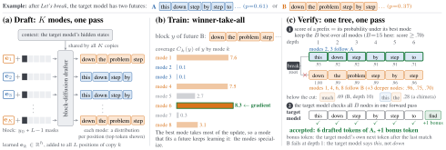
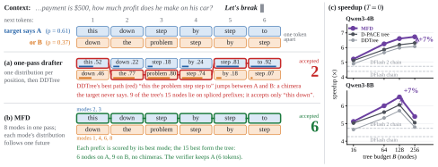
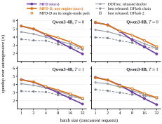
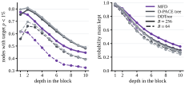

In one minute
A real GSM8K context for Qwen3-4B. After Let’s break, the target model can say this down step by step or down the problem step by step. Watch what a product-ranked tree does with the two futures, and what MFD does instead.
On a narrow screen the animation scrolls sideways; the MP4 below plays full-screen.
Drafter (a): DFlash fine-tuned with D-PACE, one distribution per position, DDTree keeps the 15 best prefixes under the product. Drafter (b): the same drafter fine-tuned as MFD with K = 8 modes; the tree keeps the 15 best prefixes over all modes, each scored by its best mode. In (b) the bars are each mode’s token probabilities; the 15th-best score (.698) is the common cut-off, each mode keeps the prefixes of its block that reach it (37 in all), and every node is pulled from the modes that keep it, so shared prefixes are built once. Both trees and the mode probabilities are the real ones from the paper’s Figure 1 example. Download: MP4 · GIF.

Abstract
Block drafters such as DFlash draft a block of future tokens in one forward pass, and draft trees such as DDTree verify the prefixes ranked highest by the product of the drafter’s per-position distributions. Under tree verification, the expected number of accepted tokens is the probability mass the tree covers. We show that a product misallocates it: when the continuation can follow several futures, it splices them into chimeras, prefixes stitched together from different futures that the target never produces, and gives them as much budget as the futures themselves. Barring ties, no product-ranked tree can hold two futures that disagree in m positions without 2m−1−1 chimeras, however well the drafter is trained, and in practice chimeras make up 27–33% of a 64-node tree. We propose Multi-Future Drafting (MFD), which restores the coupling with a latent variable instead of the chain rule: K learned mode embeddings at the drafter’s input draft K coherent blocks in the same pass, and a mixture DDTree lets the verifier pick the future the target takes, losslessly and with K+1 extra vectors. On four Qwen targets from 4B to 27B parameters, at batch size 1, MFD reaches up to 7.8× speedup, 5–8% faster than the best single-mode tree trained identically and, on Qwen3-4B and Qwen3-8B, 9–16% faster than the released DARTree trained on the same prompts.
How it works
The problem: a product splices futures
Under tree verification the expected number of accepted tokens equals the probability mass the tree covers, so the best tree holds the B most probable prefixes by joint probability. A one-pass drafter gives one distribution per position, and ranking by their product is right only if positions are independent. They are not: a step can be phrased, ordered or formatted in several ways, and after the futures split they disagree almost everywhere. The product’s error is the total correlation between positions, which compounds with depth, and no training of such a drafter removes it.
The fix: a latent future, not the chain rule
Two classical tools make positions dependent again. The chain rule conditions each position on the tokens before it and pays with sequential drafting. MFD uses the other one: a latent variable that names the future; given it, positions are independent. K learned embeddings are added to the drafter’s input, one per mode, and the K blocks are drafted side by side in the same forward pass. Training is winner-take-all on each block’s coverage, so the mode that fits a future keeps learning it and the modes specialize.
One exact tree, one verification pass
Every prefix is scored by its best mode, and the B best prefixes over all modes form one tree: exactly the union of the per-mode trees, computed by merging the K best-first searches into one heap. The target verifies it in a single pass, as with DDTree, and keeps the future it actually takes. The modes are not separate drafts: uncertainty about the future becomes breadth that the verifier checks in parallel.

Results
Five tasks (GSM8K, MATH-500, HumanEval, MBPP, MT-Bench) at T=0 and T=1, Hugging Face Transformers, batch size 1, one RTX PRO 6000 GPU. Speedup over autoregressive decoding, with the acceptance length τ in parentheses, five-task means. Every tree method is at its best budget. FT: fine-tuned under our recipe, one or three epochs, on 100K DFlash prompts regenerated by each target; the bottom block uses the 1.42M target-regenerated prompts of Domino, the data of DARTree’s drafter.

| Method | Training | Qwen3-4B | Qwen3-8B | Qwen3.5-4B (thinking) | Qwen3.6-27B (thinking) | ||||
|---|---|---|---|---|---|---|---|---|---|
| T=0 | T=1 | T=0 | T=1 | T=0 | T=1 | T=0 | T=1 | ||
| EAGLE-3 | released | 4.21× | 3.87× | 3.75× | 3.42× | – | – | – | – |
| DFlash chain | released | 4.38× | 3.73× | 4.26× | 3.48× | 4.85× | 3.29× | 4.66× | 4.04× |
| DFlash 2 selector chain | FT 1 ep | 4.73× | 4.12× | 4.73× | 4.00× | 5.38× | 3.97× | 4.89× | 4.35× |
| DDTree | released | 6.08× | 5.44× | 5.73× | 5.00× | 6.53× | 4.77× | 5.89× | 5.27× |
| DFlash 2 + DDTree | FT 1 ep | 6.13× | 5.39× | 5.80× | 4.88× | 6.80× | 4.62× | 5.73× | 5.07× |
| D-PACE + DDTree | FT 1 ep | 6.31× | 5.54× | 6.06× | 5.10× | 6.96× | 4.67× | 6.43× | 5.52× |
| D-PACE + DDTree | FT 3 ep | 6.22× | 5.39× | 6.04× | 5.03× | 6.97× | 4.66× | 6.46× | 5.50× |
| MFD (K=8) | FT 1 ep | 6.67× | 5.90× | 6.41× | 5.41× | 7.17× | 5.03× | 6.56× | 5.82× |
| MFD (K=8) | FT 3 ep | 6.73× | 5.96× | 6.51× | 5.43× | 7.31× | 5.04× | 6.77× | 5.94× |
| Full data: 1.42M target-regenerated prompts | |||||||||
| DARTree | released | 6.53× | 5.49× | 6.42× | 5.23× | – | – | – | – |
| D-PACE + DDTree | FT 3 ep | 6.66× | 5.66× | 6.43× | 5.26× | 7.31× | 4.74× | 6.74× | 5.69× |
| MFD (K=8) | FT 3 ep | 7.32× | 6.35× | 6.98× | 5.88× | 7.78× | 5.18× | 7.16× | 6.16× |
MFD is the fastest method for every target, temperature and task: the three-epoch MFD is 4.8–7.4% faster than the strongest baseline at T=0 and 5.7–7.6% at T=1. Fine-tuned on the full 1.42M prompts, both trees improve and the mixture’s lead grows to 6.2–12.2%. DARTree is timed in its released configuration, in the same process and on the same prompts: at the same 64 nodes it accepts more tokens per round, but its per-depth correction takes 2.6–2.7 ms per round to build the tree, against about 0.35 ms for MFD. Fine-tuning for three epochs instead of one leaves the single-mode D-PACE unchanged or slightly worse on every target, while MFD improves.
In a serving engine
We implemented DDTree and the mixture tree in SGLang 0.5.22, verifying trees inside the target’s CUDA graphs. Both draft over the 64K most frequent tokens of target responses and verify over the full vocabulary, so decoding stays lossless.
| Qwen3-4B | Qwen3-8B | |||
|---|---|---|---|---|
| T=0 | T=1 | T=0 | T=1 | |
| Released drafters on SGLang’s own engine paths | ||||
| EAGLE-3 | 2.75× | 2.58× | 3.12× | 2.88× |
| DFlash chain | 4.06× | 3.46× | 4.39× | 3.62× |
| DFlash 2 selector chain | 3.37× | 3.07× | 3.57× | 3.26× |
| Tree verification in our SGLang engine | ||||
| DDTree (released drafter) | 4.97× | 4.44× | 5.27× | 4.56× |
| D-PACE + DDTree (full data) | 5.52× | 4.72× | 5.99× | 4.82× |
| MFD (ours) | 5.93× | 5.06× | 6.43× | 5.26× |
| MFD-D (ours) | 5.89× | 5.11× | 6.41× | 5.24× |
Batch size 1. MFD is 45–46% faster than the fastest released drafter, the DFlash chain on SGLang’s own engine paths, and 7–9% faster than D-PACE fine-tuned on the same data in our engine, which shares every optimization.
Larger batches. MFD is 10–18% faster than every released option at batch 1–2 and 3–11% at batch 4, but falls behind DDTree with the released drafter from batch 8 and SGLang’s own paths from batch 16: its draft cost grows with the batch while its acceptance length does not.
MFD-D. The same drafter with a single-mode default path, which the engine switches to from three requests, is the fastest configuration we timed at every batch size.

What the modes are
A mode is one value of a latent variable that names the future. The uncertainty it hedges over is the drafter’s: at T=0 the target is deterministic, but a small drafter that reads a few target layers cannot tell the futures apart, and what remains is spread over the ways a step can be phrased, ordered or formatted. The gain therefore persists at T=0 and needs a branching verifier: a chain that follows one mode, even the gate’s best guess, is worse than a single-mode drafter, while the tree over all modes gains up to 8.7%.
- All eight modes are used. The effective number of modes is 7.9–8.0 of 8; no mode is the likeliest for more than 16% of the blocks, and leaving any one out lowers τ by 0.3–1.2%. About their mean, the embeddings are nearly equiangular, close to a regular simplex.
- The winning mode is hard to predict. The gate’s top mode is the winner in 28% of the blocks (chance: 12.5%); its top four contain it in 72%. Following each block’s best mode as a chain would be 20–40% longer, which is the hedging value no chain can collect.
- The value is in the coupling across positions. Shuffling the modes independently at each position keeps every position’s distributions but drops the tree below the single-mode one; the product of the modes’ mean marginals only matches it. The mixture explains a coupling that grows with depth and passes log K at depth 9–10.
- Most of the gain lives in the drafter’s weights. Random embeddings with the trained norms keep 60–80% of the gain on the MFD drafter but only 12–24% on a drafter trained without modes.
- Modes help where the target forks. Anchors where a runner-up token of at least 10% leads elsewhere are 60–71% of all anchors and carry 75–88% of the gain; the mixture tree removes 54–57% of the chimeras that forks add.
| Mode | Distinctive fork tokens |
|---|---|
| 1 | Our (3.9), But (3.7), implementation (3.2), To (2.6), However (2.5) |
| 2 | Rightarrow (2.8), **, (2.6), $, (2.5), `, (2.3), Thus (2.2) |
| 3 | This (3.4), These (3.1), which (3.1), Key (2.6), Since (2.6) |
| 4 | Therefore (5.0), also (3.0), Test (2.7), correctly (2.6), Then (2.6) |
| 5 | without (2.8), We (2.8), may (2.7), They (2.6), we (2.5) |
| 6 | Analy (2.5), --- (2.2), in (2.1), The (2.1), denote (2.1) |
| 7 | passes (4.2), Solve (2.4), end of turn (1.9), Find (1.9), #### (1.8) |
| 8 | $. (3.1), So (2.7), indentation (2.5), let (2.5), abc (2.3) |

Code and models
The release contains Hugging Face inference with the paper’s speed benchmark, the SGLang 0.5.22 patch (tree verification inside CUDA graphs, the mixture tree, exact tree verification for hybrid Gated-DeltaNet targets, the fused mode-attention kernel), tests, and the drafters below. Each drafter is a DFlash-format checkpoint with K=8 mode embeddings, fine-tuned from the released DFlash drafter of its target.
| Drafter | Target | Data, epochs | In the paper | Checkpoint |
|---|---|---|---|---|
| MFD | Qwen3-4B | 1.42M, 3 | Table 1 (full data), Table 2 | MFD-Qwen3-4B |
| MFD | Qwen3-8B | 1.42M, 3 | Table 1 (full data), Table 2 | MFD-Qwen3-8B |
| MFD | Qwen3.5-4B (thinking) | 1.42M, 3 | Table 1 (full data) | MFD-Qwen3.5-4B |
| MFD | Qwen3.6-27B (thinking) | 1.42M, 3 | Table 1 (full data) | MFD-Qwen3.6-27B |
| MFD | Qwen3-4B | 100K, 3 | Table 1 | MFD-Qwen3-4B-100K |
| MFD | Qwen3-8B | 100K, 3 | Table 1 | MFD-Qwen3-8B-100K |
| MFD | Qwen3.5-4B (thinking) | 100K, 3 | Table 1 | MFD-Qwen3.5-4B-100K |
| MFD | Qwen3.6-27B (thinking) | 100K, 3 | Table 1 | MFD-Qwen3.6-27B-100K |
| MFD-D | Qwen3-4B | 1.42M, 3 | Table 2, Figure 5 | MFD-D-Qwen3-4B |
| MFD-D | Qwen3-8B | 1.42M, 3 | Table 2, Figure 5 | MFD-D-Qwen3-8B |
Links to the repository and the checkpoints are filled in once the release is public.
BibTeX
@article{huang2026mfd,
title = {Multi-Future Drafting: Mixture Block Drafters for Tree-Verified Speculative Decoding},
author = {Huang, Haoyu and Kang, Jialiang and Yang, Linlin and Yang, Xiao and Zhang, Baochang},
journal = {arXiv preprint arXiv:2611.13017},
year = {2026}
}